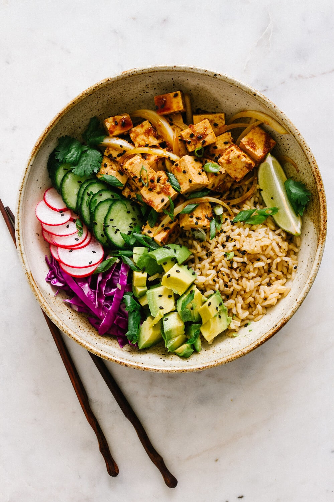

Home
Poke Bowl

Description
This trendy pokebowl is made from fresh and colourful vegetables, fruits, rice and tofu.
Ingredients
The bowl
- 250 grams of tofu
- 250 grams of rice
- 2 avocados
- 1 Cucumber
- 1 mango
- 150 grams of peeled Edamame beans
- Nori Seaweed
- Kewpie mayonnaise
Teriyaki sauce
- 1/2 dl of soy sauce
- 1/2 dl of rice vinegar
- 2 tablespoons of sugar
- 1 tablespoons of minced garlic
- 1 tablespoon of ground ginger
- 1 tablespoon of cornstarch (Maizena)
Steps
- Start by drying the tofu by wrapping it in paper towels and placing
a weight on top. Put the rice in a rice cooker.
- Chop the cucumber, avocados and the mango into pieces. Measure the ingredients
for the teriyaki sauce into a bowl and mix. Boil some water and add edamame beans. Boil for a few minutes. Pour the water and let
the beans cool down.
- Take the tofu and cut it into small cubes, then place it in the airfryer for 15 minutes at 180 °C (356 °F).
Let the cooked rice cool down.
- Place the rice at the bottom of the plate, and arrange the vegetables and fruits in separate sections
on the plate. Take the tofu and sauté it in a hot pan with the teriyaki sauce for about 1-2 minutes.
Add the finished tofu to the plate. Top with shredded seaweed and kewpie mayonnaise.